Phổi Biệt Lập
I. Đại cương
– Phổi biệt lập (pulmonary sequestration) là dị tật bẩm sinh gồm mô phổi loạn sản, không thông với cây phế quản bình thường và được cấp máu từ một hay nhiều động mạch hệ thống.
– Dịch tễ:
+ Chiếm khoảng 0,15–6,4% tổng số dị tật phổi bẩm sinh; ước tính thay đổi giữa các quần thể và loạt bệnh.
+ Tỷ lệ nam:nữ thay đổi theo thể và loạt bệnh; ưu thế nam được ghi nhận ở một số loạt thể ngoại thùy.
– Vị trí: Thường ở thùy dưới, ưu thế bên trái; khoảng hai phần ba thể nội thùy nằm ở phân thùy đáy sau thùy dưới trái.
– Phân loại: Thể nội thùy chiếm khoảng 75–85%, thể ngoại thùy 15–25%.
– Biến chứng: Nhiễm trùng tái diễn thường gặp hơn ở thể nội thùy; u ác tính trong hoặc đồng tồn tại với phổi biệt lập đã được báo cáo, nhưng nguy cơ thật sự chưa xác định.
– Hình thái lâm sàng:
+ Thể ngoại thùy thường được phát hiện trước sinh hoặc ở sơ sinh; nhiều trường hợp không triệu chứng, khối lớn có thể gây suy hô hấp, tím tái hoặc suy tim cung lượng cao. Dị tật bẩm sinh phối hợp gặp khoảng 50–60% trong một số loạt bệnh, thường là thoát vị hoành, dị tật tim hoặc dị tật phổi; nhiễm trùng ít gặp.
+ Thể nội thùy thường biểu hiện muộn hơn bằng viêm phổi tái diễn khu trú; cũng có thể không triệu chứng hoặc phát hiện tình cờ. Triệu chứng gồm ho, đau ngực/lưng, khó thở, sốt khi nhiễm trùng hoặc ho ra máu.
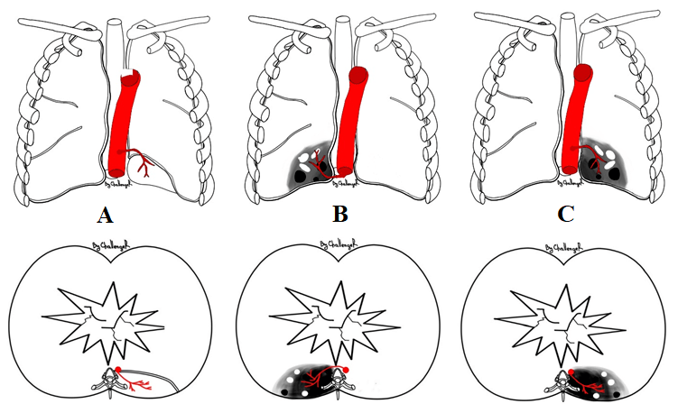
© Chẩn Đoán Hình Ảnh Xray.vn
II. Chẩn đoán hình ảnh
1. Biệt lập nội thùy
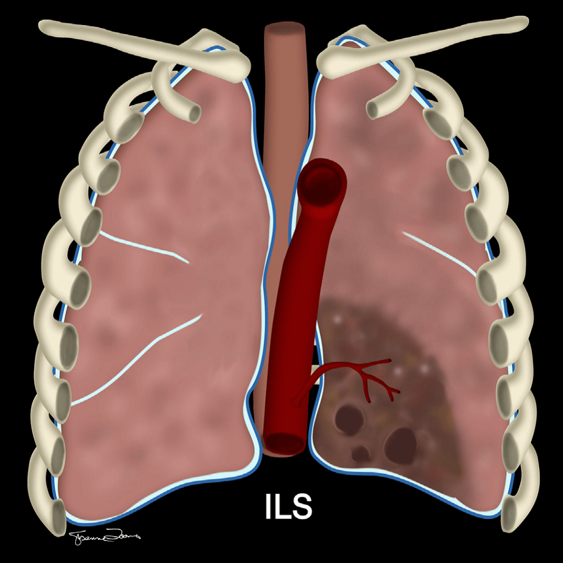
* Đặc điểm
– Dịch tễ: Thể nội thùy chiếm khoảng 75–85% các trường hợp phổi biệt lập.
– Đặc điểm giải phẫu:
+ Mô phổi loạn sản nằm trong lá tạng màng phổi chung với phổi lành, không có màng phổi riêng và thường liên kết chặt với nhu mô xung quanh.
+ Thường không thông với cây phế quản bình thường; nhiễm trùng có thể tạo thông thương thứ phát. Tĩnh mạch dẫn lưu chủ yếu về tĩnh mạch phổi; ít gặp hơn là hệ tĩnh mạch đơn/bán đơn, tĩnh mạch chủ dưới, tĩnh mạch cửa hoặc nhĩ phải.
– Vị trí: Bên trái chiếm ưu thế, khoảng 60% đến hai phần ba tùy loạt bệnh; thường ở thùy dưới, đặc biệt phân thùy đáy sau. Bên phải vẫn gặp, tổn thương hai bên hiếm.
– Hình thái lâm sàng:
+ Một số loạt bệnh ghi nhận khoảng 60% được chẩn đoán trước hoặc ở tuổi 20; tuy nhiên, bệnh cũng có thể được phát hiện ở người trưởng thành hoặc tình cờ. Phát hiện ở nhũ nhi ít gặp hơn thể ngoại thùy.
+ Thường biểu hiện bằng viêm phổi tái diễn khu trú ở trẻ lớn hoặc thiếu niên. Viêm tái diễn vùng đáy sau, nhất là thùy dưới, là gợi ý cần lưu ý; người trưởng thành có thể ho, sốt khi nhiễm trùng, đau ngực/lưng, khó thở hoặc ho ra máu.
+ Dị tật bẩm sinh phối hợp ít gặp hơn thể ngoại thùy; đôi khi có tổn thương phối hợp với dị dạng nang phổi bẩm sinh.
* Chẩn đoán x-quang
– Đặc điểm hình ảnh: Biểu hiện thay đổi theo kích thước tổn thương và tình trạng nhiễm trùng.
– Hình thái tổn thương:
+ Dạng nốt hoặc khối đơn độc.
+ Dạng nang hoặc đa nang, có thể chứa khí, dịch, máu hoặc chất nhầy; mức khí–dịch có thể xuất hiện khi hình thành thông thương phế quản thứ phát, thường sau nhiễm trùng.
+ Dạng đông đặc, đôi khi không đồng nhất do phối hợp thành phần đặc và nang; bờ có thể rõ, chia thùy hoặc không đều.
– Vị trí: Khoảng 98% tổn thương nằm ở thùy dưới và khoảng 60% ở bên trái trong một số loạt bệnh; tổn thương hai bên rất hiếm. Thường ở phân thùy đáy sau và có thể áp sát cơ hoành.
– Kỹ thuật: Tư thế nghiêng giúp định vị tổn thương vùng đáy sau; tổn thương nhỏ có thể bị che lấp trên phim thẳng.
– Dấu hiệu kèm theo:
+ Tổn thương lớn có thể gây hiệu ứng khối, đẩy ép nhu mô phổi lân cận hoặc trung thất.
+ Có thể kèm giãn phế quản khu trú, xẹp phổi hoặc giảm thể tích thùy; tràn dịch màng phổi hiếm gặp.
– Gợi ý lâm sàng: Viêm phổi tái diễn hoặc dai dẳng khu trú ở thùy dưới, nhất là vùng đáy sau, cần gợi ý phổi biệt lập nội thùy.
– Cạm bẫy:
+ Tổn thương thường áp sát cơ hoành nhưng không phải lúc nào cũng liên tục với cơ hoành; hình ảnh đông đặc hoặc dạng khối trên X-quang không đặc hiệu.
+ X-quang không đánh giá tin cậy được các bó mạch, phế quản quanh tổn thương hay động mạch nuôi hệ thống; cần CLVT mạch để xác định giải phẫu mạch máu. Phim X-quang bình thường hoặc không đặc hiệu không loại trừ chẩn đoán.
=> Case lâm sàng 1:
=> Case lâm sàng 2:

=> Case lâm sàng 3:
=> Case lâm sàng 4:
=> Case lâm sàng 5:
* Chẩn đoán CLVT
– Hình thái tổn thương: Có thể là khối đậm độ mô mềm, đám đông đặc, tổn thương dạng nang hoặc hỗn hợp; bờ thay đổi từ rõ đến chia thùy hoặc không đều, nhất là khi có viêm.
– Thành phần nang: Có thể có một hoặc nhiều nang chứa khí hoặc dịch; mức khí–dịch có thể hình thành khi có thông thương phế quản thứ phát sau nhiễm trùng.
– Vôi hóa: Có thể gặp nhưng không đặc hiệu cho phổi biệt lập.
– Ngấm thuốc: Phần mô đặc có thể tăng quang không đồng nhất; mức độ và kiểu tăng quang thay đổi theo thành phần nang, mô đặc và tình trạng viêm.
– Nhu mô phổi lân cận: Có thể tăng sáng, ứ khí hoặc có biến đổi khí phế thũng khu trú.
– Mạch máu: Có thể thấy động mạch hệ thống bất thường đi vào tổn thương; CT thường quy không thấy mạch nuôi không loại trừ chẩn đoán.
– Cạm bẫy: Khối, đông đặc, nang hoặc mức khí–dịch đơn thuần không đặc hiệu, có thể giống áp xe hoặc dị dạng nang phổi bẩm sinh; cần đánh giá mạch nuôi để củng cố chẩn đoán.
=> Case lâm sàng 1:
=> Case lâm sàng 2:
– CLVT mạch với tái tạo MPR và 3D giúp xác định số lượng, nguyên ủy, đường đi của động mạch nuôi và đường dẫn lưu tĩnh mạch, hỗ trợ lập kế hoạch phẫu thuật.
– Động mạch nuôi:
+ Động mạch chủ ngực xuống là nguyên ủy thường gặp nhất, được báo cáo ở khoảng 72–86% tùy loạt bệnh. Các nguồn khác gồm động mạch chủ bụng, thân tạng hoặc lách; động mạch gian sườn chiếm khoảng 3,7% trong một tổng quan cũ, các nguồn khác hiếm gặp hơn.
+ Mạch nuôi thường đi qua dây chằng phổi dưới, nhưng số lượng và đường đi có thể thay đổi.
+ Khoảng 16–20% trường hợp có nhiều động mạch nuôi theo một số báo cáo; cần khảo sát toàn bộ để tránh bỏ sót. Không thấy mạch nuôi trên CT thường quy hoặc khảo sát không đúng pha không loại trừ chẩn đoán.
– Tĩnh mạch dẫn lưu:
+ Phần lớn dẫn lưu qua tĩnh mạch phổi về nhĩ trái; các loạt bệnh báo cáo khoảng 92,5–95%.
+ Ít gặp hơn, máu dẫn lưu qua hệ tĩnh mạch đơn/bán đơn hoặc tĩnh mạch chủ trên/dưới; một số đường dẫn lưu bất thường khác cũng được ghi nhận. Không mặc định phần còn lại đổ trực tiếp vào nhĩ phải.
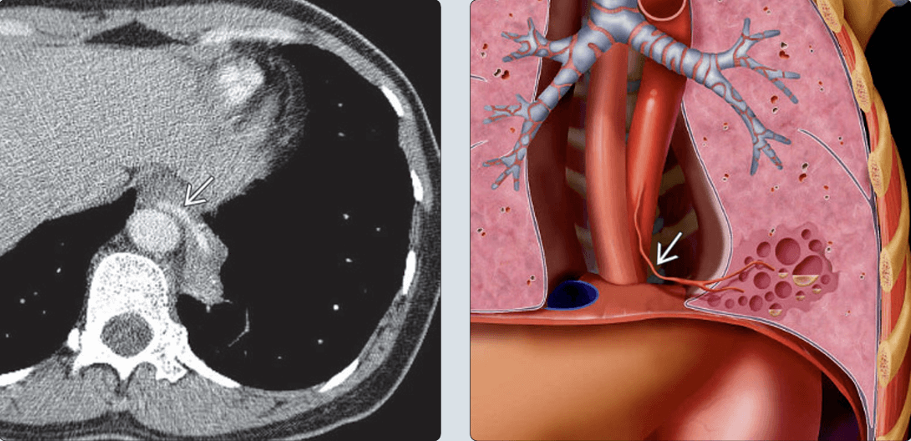
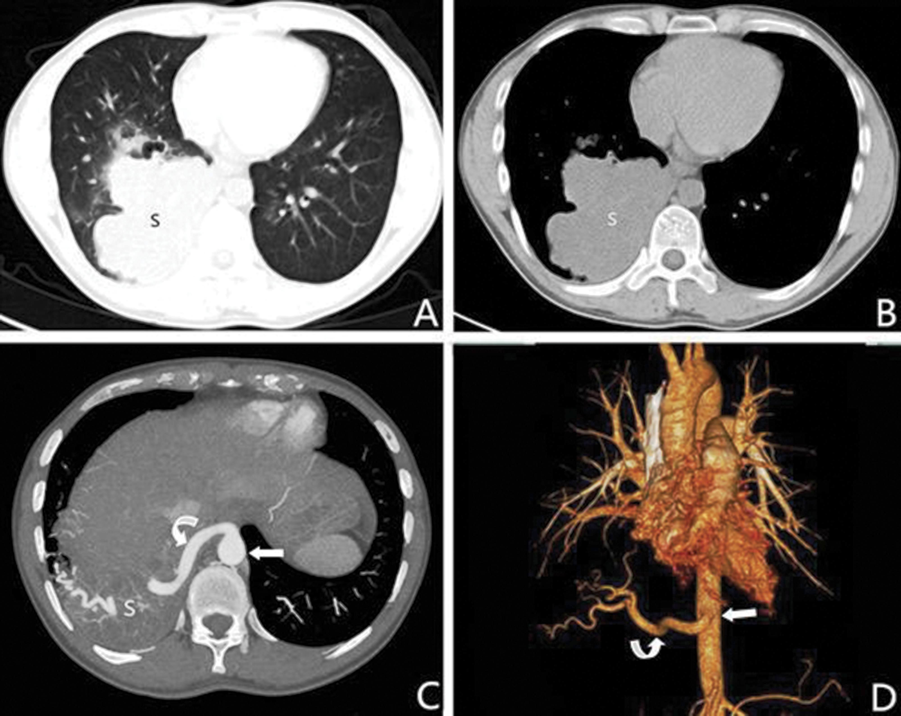
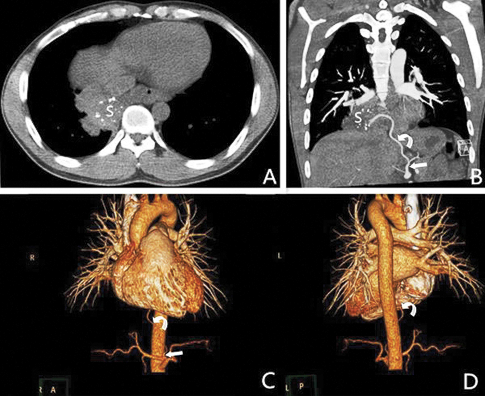
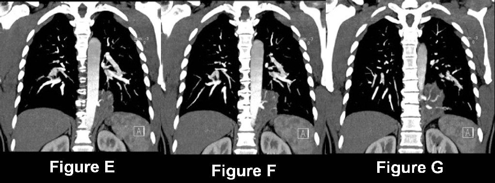
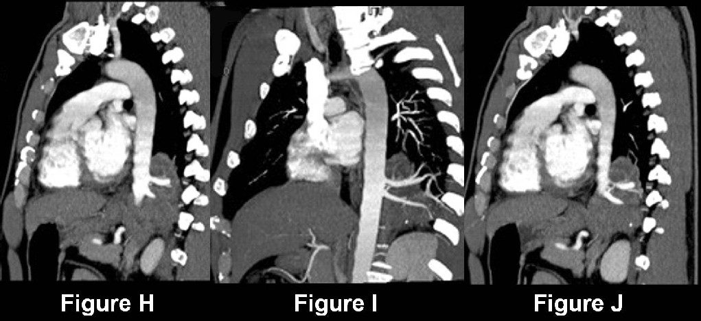
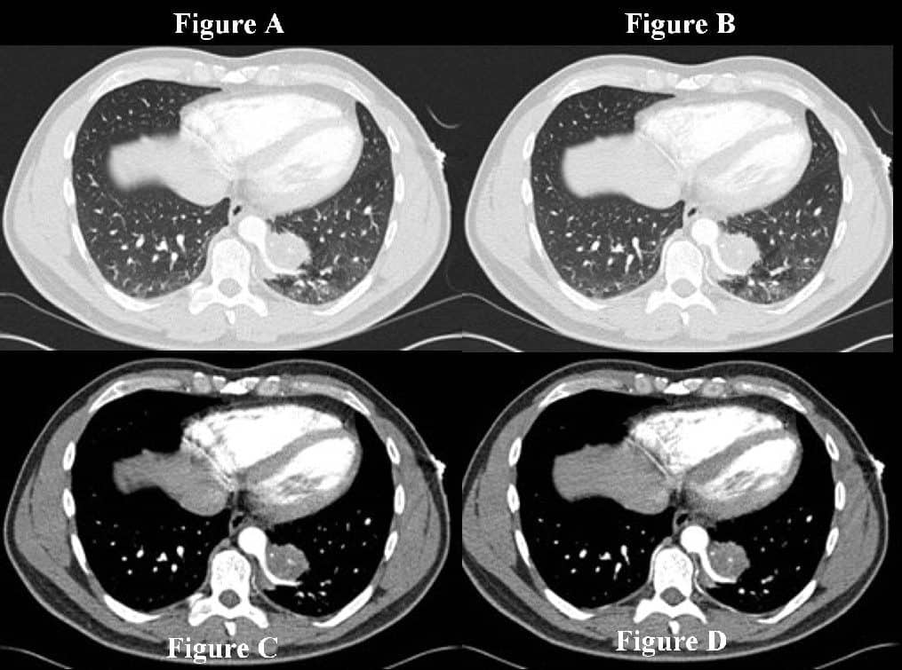
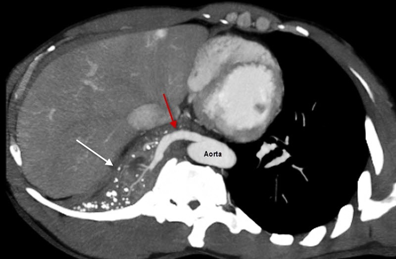
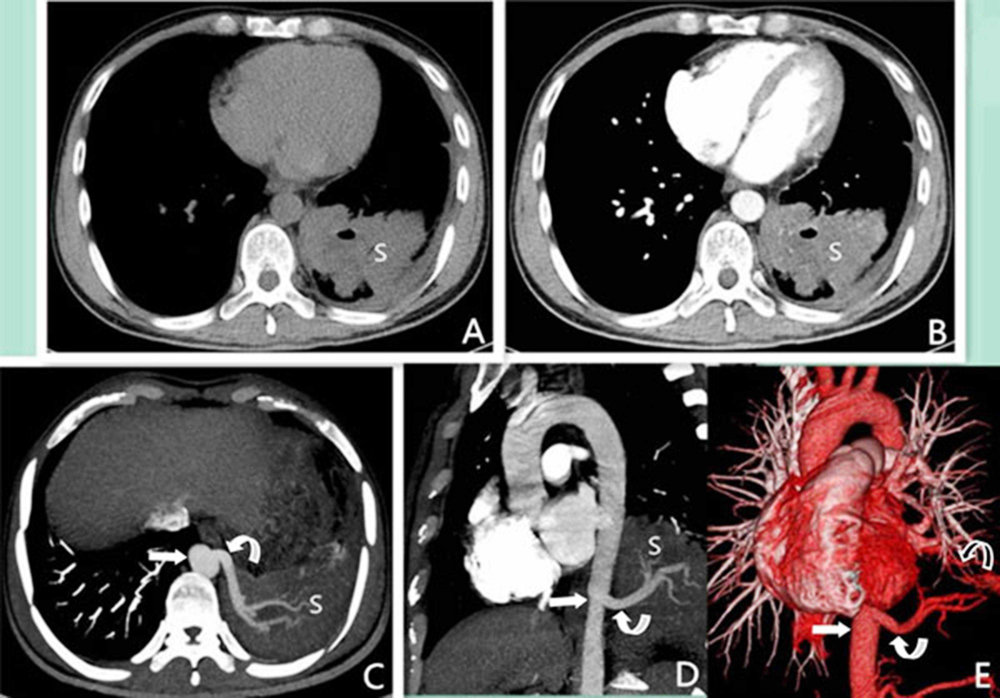
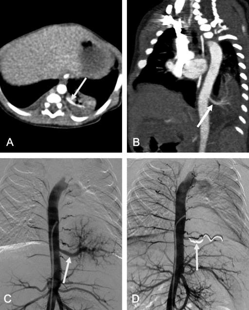
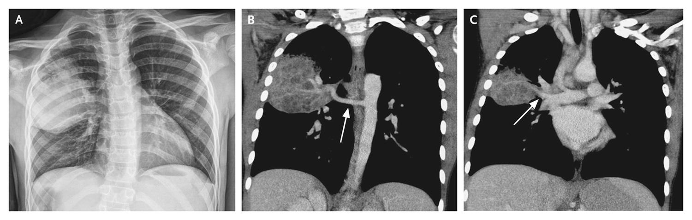
– Đặc điểm hình ảnh: Nhiễm trùng có thể tạo thông thương thứ phát với cây phế quản, khiến tổn thương xuất hiện một hoặc nhiều nang chứa khí, có thể có mức khí–dịch; kích thước nang thay đổi. Mức khí–dịch không đặc hiệu cho phổi biệt lập.
=> Case lâm sàng 1:
=> Case lâm sàng 2:
=> Case lâm sàng 3:


=> Case lâm sàng 4:
=> Case lâm sàng 5:
=> Case lâm sàng 6:
=> Case lâm sàng 7:
=> Case lâm sàng 8:
=> Case lâm sàng 9:

=> Case lâm sàng 10:
=> Case lâm sàng 11:
=> Case lâm sàng 12:
2. Biệt lập ngoại thùy
* Đặc điểm
– Biệt lập ngoại thùy (extralobar pulmonary sequestration) là mô phổi loạn sản tách biệt với phổi lành, có màng phổi riêng và thường không thông với cây phế quản; mô có thể gồm các tiểu phế quản, ống phế nang, phế nang và mô kẽ sắp xếp loạn sản.
– Dịch tễ: Chiếm khoảng 15–25% các trường hợp phổi biệt lập.
– Vị trí: Thường ở vùng sau trong đáy lồng ngực, cạnh thùy dưới và cơ hoành, ưu thế bên trái; khoảng 10–15% nằm dưới cơ hoành. Vị trí trung thất hoặc sau phúc mạc hiếm gặp.
– Dẫn lưu tĩnh mạch: Thường về hệ tĩnh mạch hệ thống như tĩnh mạch đơn/bán đơn hoặc tĩnh mạch chủ dưới rồi đổ về nhĩ phải; hiếm gặp dẫn lưu qua tĩnh mạch cửa hoặc tĩnh mạch phổi về nhĩ trái.
– Dị tật phối hợp: Gặp thường xuyên hơn thể nội thùy; tỷ lệ được báo cáo khoảng 50–90% tùy loạt bệnh. Các dị tật thường gặp gồm thoát vị hoặc eventration cơ hoành, dị tật tim, dị dạng phổi, nang phế quản hoặc dị tật đường tiêu hóa.
– Hình thái lâm sàng:
+ Thường được phát hiện trước sinh hoặc trong năm đầu đời; một số tổng quan cũ ghi nhận khoảng 61% được chẩn đoán trước 6 tháng. Khối lớn có thể gây chèn ép phổi lành, suy hô hấp hoặc suy tim cung lượng cao.
+ Nhiều trường hợp không triệu chứng. Nhiễm trùng ít gặp hơn thể nội thùy do có màng phổi riêng và thường không thông với cây phế quản, nhưng vẫn có thể xảy ra.
* Chẩn đoán x-quang
– Kỹ thuật: Phim thẳng giúp phát hiện đám mờ vùng đáy lồng ngực; phim nghiêng hỗ trợ xác định vị trí sau tim và vùng đáy sau. Tổn thương nhỏ có thể bị che lấp bởi tim hoặc cơ hoành.
– Hình thái: Thường là đám mờ đậm độ mô mềm, tương đối đồng nhất, bờ rõ; có thể tròn, bầu dục, hình chóp hoặc hình chêm. Đôi khi khối có dạng tam giác, đỉnh hướng về rốn phổi, nhưng hình dạng này không đặc hiệu.
– Vị trí: Thường ở vùng đáy lồng ngực sau trong, gần cơ hoành và ưu thế bên trái; tổn thương bên phải hoặc dưới cơ hoành vẫn có thể gặp.
– Kích thước và hiệu ứng khối:
+ Kích thước thay đổi từ nhỏ đến khối lớn chiếm phần đáng kể, hiếm khi gần toàn bộ một bên lồng ngực.
+ Khối lớn có thể chèn ép nhu mô phổi lân cận, gây xẹp phổi hoặc đẩy lệch trung thất.
– Cạm bẫy:
+ Hình ảnh khối mờ vùng đáy sau không đặc hiệu, có thể bị nhầm với đông đặc hoặc khối vùng ngực dưới.
+ X-quang không xác định được màng phổi riêng, sự thông thương với cây phế quản hay động mạch nuôi hệ thống; phim không đặc hiệu không loại trừ biệt lập ngoại thùy. Cần CLVT mạch để xác nhận giải phẫu mạch máu.
* Chẩn đoán CLVT
– Vị trí: Thường ở ngực trái (khoảng 65–90% tùy loạt bệnh); khoảng 63–77% nằm ở rãnh sườn hoành sau, giữa thùy dưới và cơ hoành. Tổn thương cũng có thể ở trung thất, cao trong lồng ngực, dưới cơ hoành hoặc sau phúc mạc.
– Hình thái: Thường là khối đậm độ mô mềm, tương đối đồng nhất, bờ rõ; có thể không đồng nhất hoặc có thành phần nang. Nhu mô lân cận đôi khi có biến đổi khí phế thũng.
– Đánh giá mạch máu: CLVT mạch thì động mạch kết hợp tái tạo MPR và 3D giúp xác định nguyên ủy, số lượng và đường đi của động mạch nuôi, đồng thời khảo sát tĩnh mạch dẫn lưu.
– Động mạch nuôi:
+ Khoảng 80% xuất phát từ động mạch chủ ngực hoặc bụng; khoảng 15% từ các động mạch hệ thống khác như động mạch dưới đòn, lách, vị hoặc gian sườn.
+ Một số báo cáo ghi nhận khoảng 5% có cấp máu phối hợp từ tuần hoàn hệ thống và động mạch phổi; đây không đồng nghĩa với cấp máu đơn thuần từ động mạch phổi.
+ Có thể có nhiều động mạch nuôi; tỷ lệ khoảng 20% được báo cáo trong một số loạt bệnh. Cần khảo sát toàn bộ đường đi của mạch để tránh bỏ sót nhánh.
– Tĩnh mạch dẫn lưu:
+ Thường đổ vào hệ tĩnh mạch hệ thống, như tĩnh mạch đơn/bán đơn hoặc tĩnh mạch chủ dưới, rồi về nhĩ phải; tĩnh mạch dưới đòn và tĩnh mạch cửa là các đường dẫn lưu ít gặp.
+ Một số trường hợp có thành phần dẫn lưu qua tĩnh mạch phổi về nhĩ trái; tỷ lệ khoảng 25% được báo cáo trong một số loạt bệnh và có thể chồng lấp với dẫn lưu hệ thống.
III. Chẩn đoán phân biệt
* Nang tuyến bẩm sinh
– Dị dạng nang phổi bẩm sinh (congenital pulmonary airway malformation, CPAM), trước đây gọi là dị dạng nang tuyến bẩm sinh (congenital cystic adenomatoid malformation, CCAM), là nhóm dị tật phát triển đường thở dưới, có thể tạo tổn thương dạng nang hoặc đặc; tên CPAM phù hợp hơn vì không phải thể nào cũng có nang hay hình thái tuyến.
– Dịch tễ: Tần suất ước tính khoảng 1/7.200–1/35.000 trẻ sinh sống, thay đổi theo quần thể và phương pháp phát hiện.
– Cơ chế bệnh sinh: Nguyên nhân chưa được làm rõ; bệnh liên quan đến sự phát triển và phân nhánh bất thường của đường thở trong thời kỳ bào thai.
– Hình thái lâm sàng:
+ Tổn thương thường khu trú ở một thùy, thường một bên nhưng đôi khi có thể hai bên; có thể được phát hiện trước sinh hoặc sau sinh. Tổn thương lớn có thể gây chèn ép phổi, lệch trung thất, phù thai, biến dạng lồng ngực hoặc suy hô hấp sơ sinh.
+ Nhiều trường hợp không triệu chứng lúc sinh; trẻ lớn hơn có thể bị nhiễm trùng hô hấp tái diễn, ho hoặc khó thở. Mức độ biểu hiện không thể suy ra chỉ từ kích thước nang.
– Phân loại mô bệnh học Stocker: Gồm năm type (0–IV); hình ảnh chỉ gợi ý, phân type chính thức dựa trên mô bệnh học:
+ Type 0 (khoảng 1–3%): Loạn sản nang tận lan tỏa, thường ảnh hưởng rộng đến phổi và không tương thích với sự sống.
+ Type I (khoảng 60–70%): Thể thường gặp nhất, gồm một hoặc nhiều nang lớn khoảng 2–10 cm, đôi khi có các nang nhỏ hơn xung quanh.
+ Type II (khoảng 10–40%): Nhiều nang nhỏ khoảng 0,5–2 cm; có thể phối hợp dị tật thận, tim, tiêu hóa hoặc xương.
+ Type III (khoảng 5–10%): Nhiều nang rất nhỏ, thường dưới 5 mm, tạo hình ảnh mô đặc hoặc vi nang và có thể chiếm phần lớn một thùy.
+ Type IV (khoảng 10–15%): Tổn thương nang lớn ở ngoại vi, có thể vượt 10 cm.
– Đặc điểm hình ảnh:
+ CPAM do phát triển, phân nhánh bất thường và tăng sinh không tổ chức của đường thở ngoại vi; biểu hiện có thể dạng nang lớn, đa nang, vi nang với hình thái đặc hoặc hỗn hợp.
+ Tổn thương thường khu trú một thùy; đa thùy hoặc hai bên ít gặp. Nang thường có thành mỏng, số lượng và kích thước thay đổi. Thể vi nang có thể tạo khối dạng đặc với các nang nhỏ chứa dịch.
+ Sau khi thông thương với đường thở hoặc nhiễm trùng, nang có thể chứa khí hoặc xuất hiện mức khí–dịch; dấu này không đặc hiệu cho CPAM.
+ Tổn thương có thể giảm kích thước hoặc không còn thấy trên siêu âm trước sinh về cuối thai kỳ; điều đó không chứng minh dị dạng đã biến mất sau sinh, nên vẫn cần đánh giá sau sinh.
– Phân biệt với phổi biệt lập (pulmonary sequestration):
+ CPAM thường được cấp máu từ động mạch phổi và dẫn lưu qua tĩnh mạch phổi; phổi biệt lập đặc trưng bởi động mạch nuôi hệ thống và thường không thông với cây phế quản bình thường.
+ CPAM có thể dạng nang đa ổ, vi nang hoặc dạng đặc; phổi biệt lập cũng có thể biểu hiện thành khối, đông đặc hoặc tổn thương nang, nhất là khi nhiễm trùng. Hình thái đơn thuần không đủ phân biệt.
+ Cả hai bệnh đều có thể gây nhiễm trùng tái diễn khu trú; mức khí–dịch cũng có thể gặp trong cả hai nên không phải dấu hiệu phân biệt đặc hiệu.
+ CLVT mạch giúp tìm động mạch nuôi hệ thống để củng cố chẩn đoán phổi biệt lập; tổn thương phối hợp CPAM–phổi biệt lập có thể có cấp máu hệ thống và không nên loại trừ CPAM chỉ vì thấy mạch nuôi bất thường.
=> Case lâm sàng 1:
=> Case lâm sàng 2:
=> Case lâm sàng 3:
=> Case lâm sàng 4:
* Khí thũng thùy phổi
– Khí thũng thùy phổi bẩm sinh (congenital lobar overinflation, CLO; tên cũ congenital lobar emphysema, CLE) là tình trạng quá giãn một hoặc nhiều thùy phổi do tắc nghẽn phế quản một phần, thường theo cơ chế van một chiều gây ứ khí thì thở ra.
– Nguyên nhân:
+ Khoảng một nửa trường hợp không xác định được nguyên nhân; thiếu, thiểu sản hoặc loạn sản sụn phế quản được ghi nhận ở khoảng một phần tư, có thể gây xẹp phế quản khi thở ra.
+ Các nguyên nhân khác gồm hẹp hoặc nhuyễn phế quản, dị vật hay nút nhầy trong lòng phế quản, chèn ép từ ngoài do bất thường mạch máu hoặc khối trung thất.
+ Tăng số lượng phế nang kiểu thùy đa phế nang là một nguyên nhân nhu mô ít gặp; vai trò của bất thường mô liên kết nâng đỡ chưa được xác lập chắc chắn.
– Vị trí: Thường gặp nhất ở thùy trên trái (khoảng 40–50%), tiếp theo là thùy giữa phải (khoảng 30%) và thùy trên phải (khoảng 20%); tổn thương thùy dưới hiếm. Tổn thương nhiều thùy hoặc hai bên ít gặp.
– Hình thái lâm sàng:
+ Khoảng một phần ba trẻ có triệu chứng ngay sau sinh; đa số trường hợp có triệu chứng được phát hiện trong 6 tháng đầu đời, nhưng đôi khi bệnh chỉ được phát hiện muộn hoặc tình cờ.
+ Quá căng thùy phổi gây chèn ép nhu mô lân cận, có thể biểu hiện bằng suy hô hấp, thở co kéo, khò khè, tím tái hoặc bú kém; trẻ lớn hơn có thể ho và nhiễm trùng hô hấp tái diễn.
– Đặc điểm hình ảnh:
+ Sơ sinh có thể thấy thùy tổn thương mờ do còn dịch phổi hoặc thông khí chưa đầy đủ; khi khí vào phổi và bị giữ lại, thùy trở nên tăng sáng và tăng thể tích.
+ X-quang cho thấy thùy quá căng, các mạch phổi thưa và kéo dài; thùy có thể thoát vị qua đường giữa, đẩy trung thất sang bên đối diện và chèn ép gây xẹp các thùy lân cận.
+ CLVT xác nhận thùy tăng thể tích, giảm đậm độ và các mạch máu trong thùy bị kéo giãn, thưa thớt; thường không có cấu trúc nang như trong dị dạng nang phổi bẩm sinh.
– Phân biệt với phổi biệt lập (pulmonary sequestration): Khí thũng thùy phổi gây thùy tăng sáng, tăng thể tích với mạch phổi thưa nhưng còn phân nhánh trong thùy; phổi biệt lập thường là khối hoặc đám đông đặc khu trú, hay ở thùy dưới, có thể xác định động mạch nuôi hệ thống trên CLVT mạch.
– Cạm bẫy:
+ Tăng sáng một bên ở trẻ sơ sinh có thể giống tràn khí màng phổi; mạch phổi còn thấy chạy trong vùng tăng sáng và không có đường màng phổi tạng giúp phân biệt.
+ Tên gọi “khí thũng” không đồng nghĩa với phá hủy vách phế nang như khí phế thũng mắc phải; cấu trúc phế nang thường được bảo tồn.


=> Case lâm sàng 1:

=> Case lâm sàng 2:


=> Case lâm sàng 3:


=> Case lâm sàng 4:

=> Case lâm sàng 5:


=> Case lâm sàng 6:


IV. Tiên lượng & Điều trị
– Tiên lượng:
+ Thể nội thùy có nguy cơ nhiễm trùng tái diễn, giãn phế quản, áp xe phổi và ho ra máu nếu còn tổn thương; thể ngoại thùy thường ít nhiễm trùng hơn, nhưng khối lớn hoặc luồng thông hệ thống lưu lượng cao có thể gây suy hô hấp hay suy tim ở trẻ nhỏ.
+ Sau cắt bỏ hoàn toàn, tiên lượng thường tốt. Trong một loạt hồi cứu gồm 97 người lớn được phẫu thuật, không ghi nhận tử vong quanh mổ; biến chứng sau mổ là 4,1% và không ghi nhận tái phát ở nhóm được theo dõi (thời gian theo dõi trung vị 35 tháng). Tuy nhiên, 31% mất theo dõi nên chưa xác định chắc chắn kết quả dài hạn (Ren và cs., 2023).
+ Diễn tiến lâu dài của tổn thương không triệu chứng chưa được xác định rõ; nguy cơ ác tính trong phổi biệt lập chưa được định lượng đáng tin cậy.
– Đánh giá trước điều trị: CLVT mạch là phương tiện chính để xác định số lượng, nguyên ủy, đường đi và kích thước động mạch nuôi, tĩnh mạch dẫn lưu, phình mạch và liên quan với các cấu trúc lân cận; cân nhắc đánh giá chức năng hô hấp và tim mạch theo biểu hiện lâm sàng.
– Điều trị:
+ Chưa có hướng dẫn chuyên biệt thống nhất; lựa chọn điều trị, nhất là ở người không triệu chứng, cần cá thể hóa theo thể bệnh, tiền sử nhiễm trùng hoặc ho ra máu, kích thước tổn thương, giải phẫu mạch máu, bệnh phối hợp và nguy cơ phẫu thuật (Ren và cs., 2023; Szablics và cs., 2025).
+ Khi có nhiễm trùng cấp, điều trị nhiễm trùng và kiểm soát tình trạng viêm trước khi phẫu thuật chương trình nếu có thể. Ho ra máu nặng cần xử trí cấp cứu; nút mạch có thể giúp cầm máu.
+ Phẫu thuật thường được lựa chọn khi có nhiễm trùng tái diễn, ho ra máu, chèn ép, phình động mạch nuôi hoặc ảnh hưởng tim–hô hấp. Với thể nội thùy, cắt thùy phổi phù hợp khi tổn thương lan rộng; cắt phân thùy hoặc hình chêm có thể cân nhắc với tổn thương ngoại vi khu trú để bảo tồn nhu mô. Với thể ngoại thùy, thường cắt bỏ khối biệt lập. Ưu tiên phẫu thuật nội soi lồng ngực khi giải phẫu và điều kiện cho phép; phẫu thuật mở có thể cần thiết khi dính nhiều hoặc giải phẫu mạch phức tạp.
+ Nút mạch qua catheter có thể là điều trị ở người nguy cơ phẫu thuật cao hoặc có giải phẫu phù hợp; cũng có thể phối hợp trước mổ trong tổn thương có động mạch nuôi lớn, phức tạp hoặc phình. Nguy cơ còn dòng cấp máu hoặc cần can thiệp lại khiến phương pháp này cần được lựa chọn và theo dõi thận trọng.
+ Với tổn thương không triệu chứng, có thể cân nhắc theo dõi hoặc phẫu thuật chương trình sau khi thảo luận lợi ích–nguy cơ trong nhóm đa chuyên khoa; không xem nguy cơ ác tính chưa xác định là chỉ định duy nhất cho phẫu thuật dự phòng.
– Theo dõi: Sau phẫu thuật, theo dõi chảy máu, rò khí kéo dài, viêm phổi, tràn mủ màng phổi và các biến chứng liên quan. Sau nút mạch hoặc khi chọn theo dõi bảo tồn, đánh giá triệu chứng và hình ảnh để phát hiện dòng cấp máu tồn lưu, tái thông hoặc tiến triển tổn thương; hiện chưa có khoảng thời gian theo dõi chuẩn áp dụng cho mọi trường hợp.
Tài liệu tham khảo
* Intralobar sequestration: radiologic-pathologic correlation – A A Frazier, M L Rosado de Christenson
* Congenital bronchopulmonary diseases in adults – N. Ceylan, S. Bayraktaroglu, R. Savas; Izmir/TR
* CT evaluation of anomalous systemic to pulmonary vascular connections in the thorax – Y. W. Oh, B. K. Kim, S. Ham
* Bronchopulmonary sequestration: many faces of a challenge diagnosis – J. Moreira Minari, M. Ribeiro Rodero Cardoso, F. del Campo Braojos Braga
* Bronchopulmonary sequestration: radiologic expression and therapeutic spectrum – N. Antunes, M. A. Serrado, R. dos Santos
* MDCT imaging of bronchopulmonary sequestration – N. Menkovic, M. Stefanovic, Radovic
* Pulmonary sequestration. Imaging features – R. E. Correa Soto, C. Santos Montón, R. Corrales
* The clinicoradiological features of pulmonary sequestration – P. Andropova, D. G. Cheremisin, P. Gavrilov
* Imaging of pulmonary sequestration: what the radiologist needs to know – S. Accogli, M. Gabelloni, L. Faggioni, D. Caramella; pisa/IT
* Bronchopulmonary foregut malformation: A pictorial review – N. L. Eun, C. S. Yoon, M.-J. Lee
* Evaluation of pulmonary sequestration with multidetector computed tomography angiography in a select cohort of patients: A retrospective study – Qihua Long, Yunfei Zha, Zhigang Yang
* The imaging spectrum of bronchopulmonary sequestration – Christopher M Walker, Carol C Wu, Matthew D Gilman
* Extralobar pulmonary sequestration in neonates: The natural course and predictive factors associated with spontaneous regression – Hee Mang Yoon, Ellen Ai-Rhan Kim, Sung-Hoon Chung
* Congenital lung malformations: A practical approach in children – P. A. Baron Rodiz